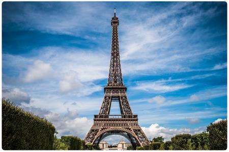
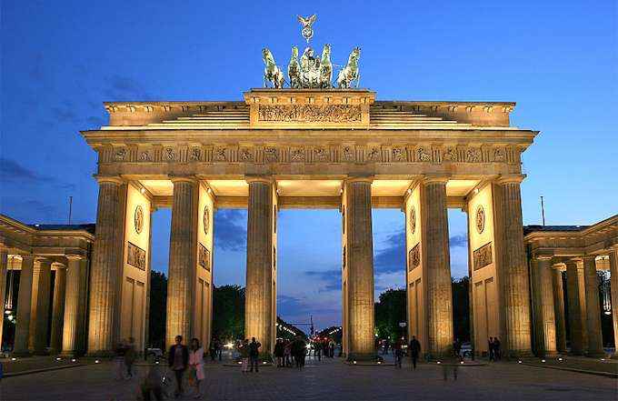

Londra

tech
Londra è la capitale e maggiore città dell'Inghilterra e del Regno Unito, con i suoi 8 825 000 abitanti. La sua estensione territoriale la rende la terza città più estesa d'Europa, preceduta da Mosca e Istanbul e seguita da Roma e Berlino. L'area metropolitana conta infatti circa 14 milioni di .
likeParigi
tech
Parigi è la capitale e la città più popolata della Francia, capoluogo della regione dell'Île-de-France e l'unico comune a essere nello stesso tempo dipartimento, secondo la riforma del 1977 e i dettami della legge PML, che espansero i vecchi confini comunali.
likeBerlino
tech
Berlino è la maggiore città e anche un Bundesland della Germania, quindi una "città-stato". Capitale federale della Repubblica Federale di Germania e sede del suo governo, è uno dei più importanti centri politici, culturali, scientifici, fieristici e mediatici.
likeRoma

tech
Roma è una città di 2 868 782 abitanti, capitale della Repubblica Italiana, nonché capoluogo dell'omonima città metropolitana e della regione Lazio. La città è dotata di un ordinamento amministrativo speciale, denominato Roma Capitale, disciplinato da una legge dello Stato.
<like